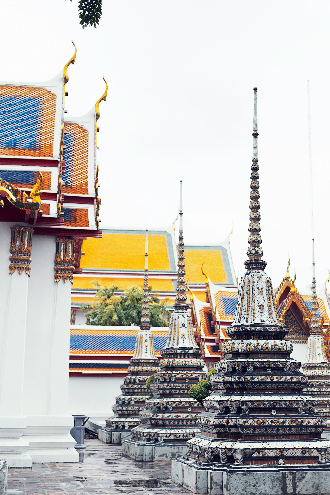
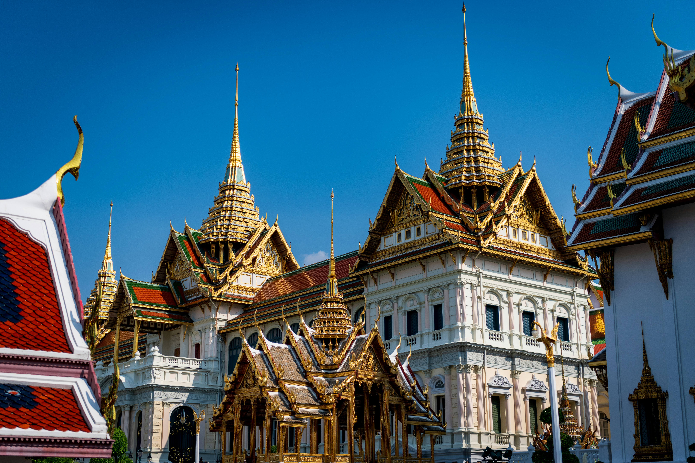
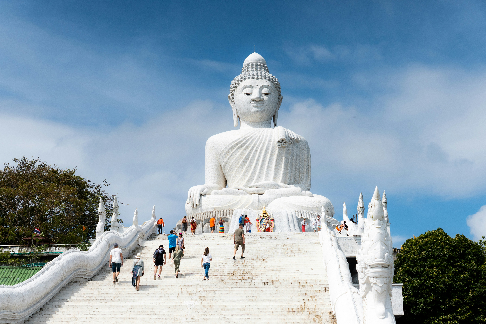
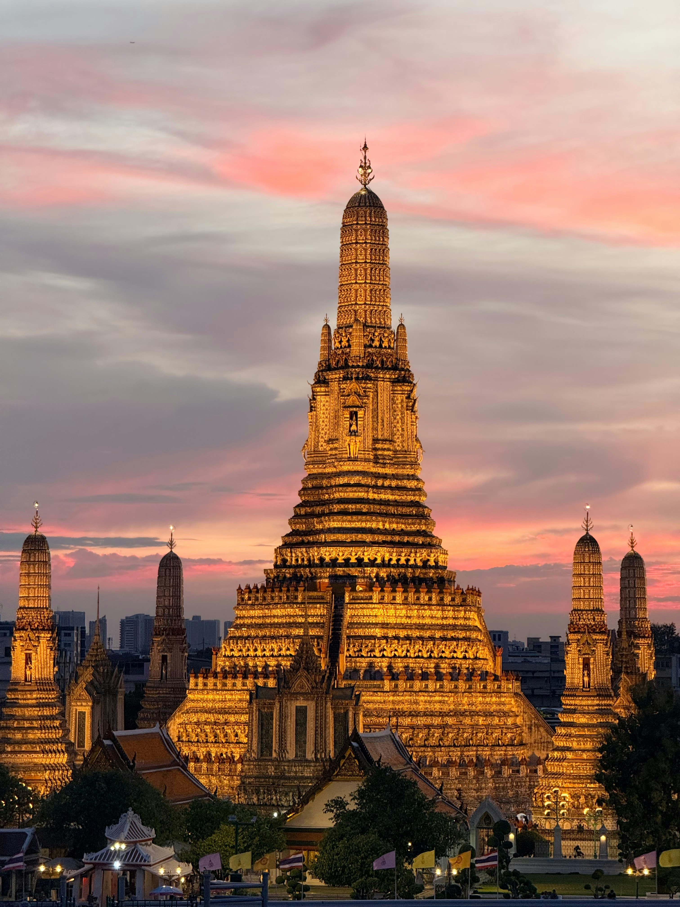

Activiteiten om te doen
Thailand heeft ontzettend veel leuke activiteiten en bijzondere bezienswaardigheden die je vakantie onvergetelijk maken! In Bangkok kun je de indrukwekkende Tempel van de Liggende Boeddha (Wat Pho) bezoeken, waar een enorm gouden Boeddhabeeld ligt. Ook het Koninklijk Paleis van Bangkok is zeker een aanrader, met zijn prachtige gebouwen, gouden details en kleurrijke versieringen. Ben je op zoek naar gezelligheid en uitgaan? Dan is Bangla Road in Phuket dé plek voor een levendige avond vol muziek, lichtjes en entertainment. Daarnaast kun je in Thailand boottochtjes maken, lokale markten ontdekken, tempels bewonderen en genieten van heerlijk Thais eten. Er is altijd iets te beleven!
Top 5 bezienswaardigheden:
-
De tempel van de liggende Boeddha (WatPho)
De tempel van de Liggende Boeddha is een van de bekendste bezienswaardigheden van Bangkok. De tempel is vooral beroemd om het enorme gouden Boeddhabeeld van maar liefst 46 meter lang. Je kunt er prachtige Thaise architectuur bewonderen en meer leren over het boeddhisme. De kleurrijke gebouwen en gouden versieringen maken dit een bijzondere plek om te bezoeken. -
Koninklijk Paleis van Bangkok
Het Koninklijk Paleis van Bangkok is een indrukwekkend complex met prachtige gebouwen, gouden daken en kleurrijke details. Vroeger woonden hier de Thaise koningen. Tegenwoordig is het een populaire toeristische attractie waar je de rijke geschiedenis en cultuur van Thailand kunt ontdekken. Vergeet niet je schouders en knieën te bedekken, want er geldt een kledingvoorschrift. -
Bangla Road
Bangla Road ligt in Patong, op het eiland Phuket, en staat bekend om zijn levendige uitgaansleven. Vooral 's avonds verandert de straat in een drukke plek vol muziek, kleurrijke lichten en entertainment. Je vindt er restaurants, winkels en verschillende uitgaansgelegenheden. Ook als je gewoon de gezellige sfeer wilt ervaren en mensen wilt kijken, is Bangla Road een bekende plek om te bezoeken. -
Phuket Grote Boeddha
De Grote Boeddha van Phuket is een enorm Boeddhabeeld dat hoog op een heuvel staat. Het beeld is ongeveer 45 meter hoog en is vanaf verschillende plekken op het eiland te zien. Vanaf de heuvel heb je een prachtig uitzicht over Phuket en de omliggende zee. Het is een bijzondere plek om de Thaise cultuur te ervaren en mooie foto's te maken. -
Tempel van de Dageraad (Wat Arun)
Wat Arun is een prachtige tempel aan de rivier de Chao Phraya in Bangkok. De tempel is herkenbaar aan zijn hoge toren, die versierd is met kleurrijke stukjes porselein en schelpen. Vooral bij zonsopkomst en zonsondergang ziet de tempel er indrukwekkend uit. Je kunt de bijzondere architectuur bewonderen en genieten van het uitzicht over de rivier en de stad.




